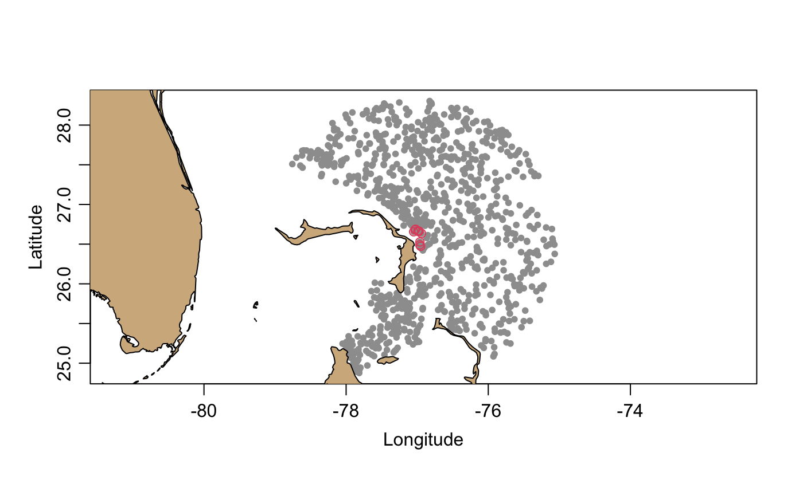

The action depends on the type of the object, and
this is set up by the function that created the object;
see “Details”.
# S4 method for argoFloats plot( x, which = "map", bathymetry = TRUE, xlim = NULL, ylim = NULL, xlab = NULL, ylab = NULL, cex = NULL, col = NULL, pch = NULL, bg = NULL, mar = NULL, mgp = NULL, eos = "gsw", debug = 0, ... )
Arguments
| x | An |
|---|---|
| which | A string that indicates the type of plot; see “Details”. |
| bathymetry | An argument used only if |
| xlim, ylim | Limits of plot axes, as for |
| xlab | A character value indicating the name for the horizontal axis, or
|
| ylab | As |
| cex | A character expansion factor for plot symbols, or |
| col | The colour to be used for plot symbols, or |
| pch | An integer or code indicating the type of plot symbol, or |
| bg | The colour to be used for plot symbol interior, for |
| mar | Either a four-element vector giving the margins to be used for
the plot (see |
| mgp | Either a three-element vector giving the geometry for
axis labels (see |
| eos | A character value indicating the equation of state to use
if |
| debug | An integer specifying the level of debugging. |
| ... | Extra arguments passed to the plot calls that are made within this function. |
Details
The various plot types are as follows.
For
which="map", a map of profile locations is created. This only works if thetypeis"index"(meaning thatxwas created bygetIndex()or a subset of such an object, created withsubset,argoFloats-method()), orargos(meaning thatxwas created withreadProfiles(). The plot range is auto-selected. If theocedatapackage is available, then itscoastlineWorldFinedataset is used to draw a coastline (which will be visible only if the plot region is large enough); otherwise, if theocepackage is available, then itscoastlineWorlddataset is used. Thebathymetryargument controls whether (and how) to draw a map underlay that shows water depth. There are three possible values forbathymetry:FALSE, meaning not to draw bathymetry;TRUE(the default), meaning to draw bathymetry using data downloaded withmarmap::getNOAA.bathy(), as in Example 4;A list with items controlling both the bathymetry data and its representation in the plot, as in Example 5. Those items are: a.
source, a mandatory value that either the string"auto"(the default) to usemarmap::getNOAA.bathy()to download the data, or a value returned by a previous call to that function; b.keep, an optional logical value (withTRUEas the default) that is passed tomarmap::getNOAA.bathy()to indicate whether to keep a local file of bathymetry, as a way to avoid intermittent problems with the NOAA server; c.colormap, an optional value that is either the string"auto"(the default) for a form of GEBCO colors computed withoce::oceColorsGebco(), or a value computed withoce::colormap()applied to the bathymetry data; and d.palette, an optional logical value (withTRUEas the default) indicating whether to draw a depth-color palette to the right of the plot.
For
which="TS", an overall TS plot is created. This only works ifxis an object that was created bygetProfiles(). The scales for the plot can be altered by puttingSlimandTlimarguments in the...list; see the documentation foroce::plotTS()for other arguments that can be provided.For
which=\"QC\", two time-series panels are shown, with time being that recorded in the individual profile in the dataset. An additional argument namedvariablemust be givn, to name the quantity of interest. The function only works ifxis anargoFloatsobject creatd withreadProfiles(). The top panel shows the percent of data flagged with codes 1 (meaning good data), 2 (probably good), 5 (changed) or 8 (estimated). Thus, low values on the top panel reveal profiles that are questionable. The bottom panel shows the mean value of the parameter in question. See Example 7.
Examples
# Example 1: map profiles in index, highlighting a neighborhood of 30 library(argoFloats) data(index) plot(index, bathymetry=FALSE)lon <- index[["longitude"]] lat <- index[["latitude"]] dist <- oce::geodDist(lon, lat, -77.06, 26.54) o <- order(dist) index30 <- subset(index, o[1:30])#># Example 3: TS of first 10 profiles # (Slow, so not run by default.) if (FALSE) { profiles10 <- getProfiles(index10, destdir="~/data/argo") argos10 <- readProfiles(profiles10) plot(argos10, which="TS")} # Example 4: map with bathymetry # (Slow, so not run by default.) if (FALSE) { par(mar=c(3, 3, 1, 1)) plot(index, bathymetry=TRUE)} # Example 5: map with fine-grained bathymetry control # (Slow, so not run by default.) if (FALSE) { par(mar=c(3, 3, 1, 1)) # Note that colormap shows water depth, not elevation above sea level bathy <- marmap::getNOAA.bathy(-82, -71, 23, 30, 2, keep=TRUE) cm <- colormap(zlim=c(0, -min(bathy)), col=function(...) rev(oceColorsGebco(...))) plot(index, bathymetry=list(source=bathy, keep=TRUE, colormap=cm, palette=TRUE))} # Example 6: TS plot for a particular argo library(argoFloats) a <- readProfiles(system.file("extdata", "SR2902204_131.nc", package="argoFloats"))#> Warning: Of 1 profiles read, 1 has >10% of BBP700 values with QC flag of 4, signalling bad data. #> The indices of the bad profiles are as follows. #> 1#> Warning: Of 1 profiles read, 1 has >10% of chlorophyllA values with QC flag of 4, signalling bad data. #> The indices of the bad profiles are as follows. #> 1#> Warning: Of 1 profiles read, 1 has >10% of oxygen values with QC flag of 4, signalling bad data. #> The indices of the bad profiles are as follows. #> 1#> Warning: Of 1 profiles read, 1 has >10% of pressure values with QC flag of 4, signalling bad data. #> The indices of the bad profiles are as follows. #> 1# Example 7: Temperature QC plot for an ID in Arabian Sea if (FALSE) { library(argoFloats) ais <- getIndex(filename='synthetic', age=0) sub <- subset(ais, ID='2902123') lonRect <- c(56, 66) latRect <- c(11,12) s <- subset(sub, rectangle=list(longitude=lonRect, latitude=latRect)) profiles <- getProfiles(s) argos <- readProfiles(profiles) plot(argos, which='QC', parameter='temperature')}